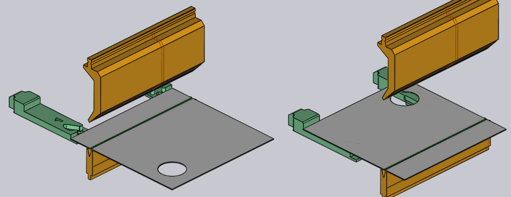
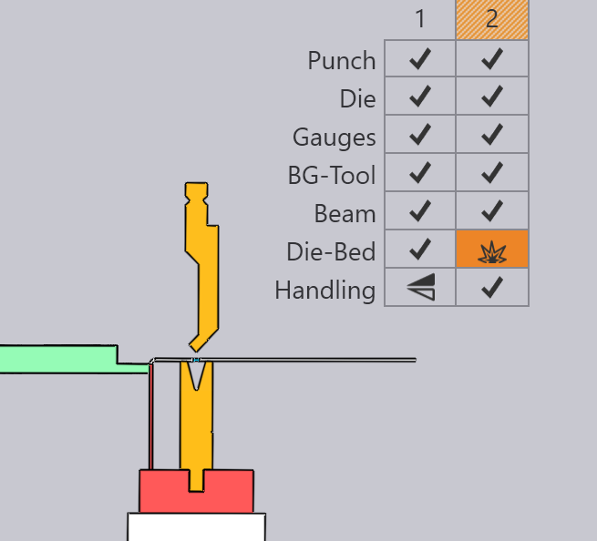
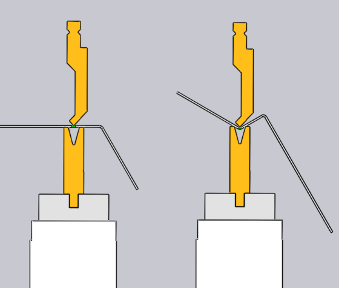
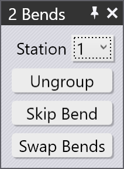

Upravit ohyb
Základní nastavení ohybu lze zobrazit a upravit pomocí panelu Ohyb. Chcete-li zobrazit panel ohybu pro konkrétní ohyb:
-
Kliknutím na ohyb v navigátoru ohýbání vyberte ohyb.
-
Klikněte znovu na stejný ohyb, aby se otevřel panel ohybu a bylo možné jej upravit.
Alternativní metoda:
-
Ctrl+kliknutím na ohyb v navigátoru ohýbání vyberete ohyb a otevřete panel pro úpravy tohoto ohybu.
Panel Ohyb

Panel Ohyb vypadá jako na obrázku vedle. Má několik nastavení a operací pro práci na ohybu.
-
Vstup Position se používá k posunu ohybu podél stroje. Zobrazená hodnota je poloha levého konce ohybu na stupnici stroje. (Můžete také přetáhnout ohyb a interaktivně nastavit jeho polohu, viz část níže).
-
Seznamy Setup a Station se používají k přesunu tohoto procesu ohýbání do jiného nastavení,[1] nebo na jinou stanici[2] v rámci tohoto nastavení. Tyto volby se zobrazí pouze v případě, že má díl více nastavení, resp. má-li nastavení více stanic. (Ohyb můžete také přesunout do jiné stanice pouhým kliknutím na obrobek a přetažením, dokud není přiřazen k jiné stanici).
-
Tlačítko Turn Part slouží k zrcadlení dílu (vložte jej druhou stranou do stroje). Obrázek níže ukazuje efekt kliknutí na toto tlačítko (dalším kliknutím na toto tlačítko se obnoví původní orientace):

-
Tlačítko Ungroup se zobrazí při úpravě ohybu s více úseky (ohyb tvořený dvěma nebo více kolineárními ohybovými úseky). Pokud lze seskupený ohyb rozdělit a zpracovat jako samostatné ohyby, lze pomocí tohoto tlačítka rozdělit tento proces ohýbání na dvě samostatné operace. Obrázek níže ukazuje, jak se ohyb 1 (zobrazený jako 1a a 1b v režimu sekvencování) po rozdělení rozdělí na ohyb 1 a 2:

-
Odkaz Angle Measure slouží k zobrazení panelu pro měření úhlu tohoto ohybu. Toto tlačítko je viditelné pouze v případě, že je pro vybraný stroj k dispozici jedna nebo více metod měření úhlu.
-
Tlačítko Skip Bend slouží k tomu, aby TecZone Bend tento konkrétní ohyb nezpracovával. To je užitečné pro označení některých ohybů jako zpracovaných jinou technologií než ohraňovacím lisem (například děrovacím lisem nebo strojem s výkyvným ohýbáním).[3]
-
Zapněte zaškrtávací políčko Coining, pokud má TecZone Bend použít operaci ohýbání ražením. Tato funkce je aktivována pouze v případě, že by bylo možné ohýbání ražením (obvykle to znamená, že existuje raznice a matrice, které lze použít). Ohýbání ražením vyžaduje větší lisovací sílu, ale může vést k menšímu poloměru ohybu než volným ohýbáním. Ohýbání ražením také vyžaduje, abyste měli razník a matrici s přesným úhlem, který je potřebný pro tento proces ohýbání.
-
Zapněte možnost Pre-bending pro rozdělení tohoto ohybu na dvě samostatné operace – předběžný ohyb a dodatečný ohyb. Ve výchozím nastavení TecZone Bend dodatečný ohyb přesune do polohy těsně za dalším ohybem v sekvenci. Více informací o použití předběžného ohybu naleznete v následující části.[4]
-
Pomocí tlačítek Prev a Next můžete procházet úpravy různých ohybů v dílu.
Pokročilé operace
Zde je několik pokročilejších operací, které můžete provádět s ohybem.
Použití předběžného ohybu
Některým typům kolizí lze zabránit rozdělením proces ohýbání na předběžný ohyb a dodatečný ohyb. Zde je jednoduchý příklad:

Díl výše má dva ohyby a na druhém ohybu díl koliduje s kolejnicí matrice. Toto nelze opravit změnou pořadí. Jedním z možných řešení je zavést předběžný ohyb v ohybu 1, a to výběrem ohybu 1 a zaškrtnutím zaškrtávacího políčka Pre-bending.

Jak je vidět na obrázku, tímto se ohyb 1 rozdělí na předběžný ohyb a dodatečný ohyb (který se nyní stává ohybem 3). Ikony na navigátoru ohýbání nyní označují, že ohyb 1 je předběžný ohyb, zatímco ohyb 3 je dodatečný ohyb. Pomocí vstupního pole Prebend můžete jemně seřídit úhel předběžného ohybu. V tomto příkladu je úhel nastaven na 120, takže díl je ohnut z rovného stavu (vnitřní úhel 180) na 120 stupňů v první fázi a poté na 90 stupňů ve druhé fázi. Během zpracování ohybu 2 tedy není první příruba zcela ohnutá, čímž se zabrání kolizi s kolejnicí matrice (níže uvedené obrázky znázorňují situaci při zpracování ohybů 2 a 3):

Úprava více ohybů
Je možné upravovat více ohybů současně. Postupujte takto:
-
Kliknutím na ohyb v navigátoru ohýbání jej vyberte.
-
Podržte Shift a vyberte další ohyby, abyste je mohli upravit všechny najednou.

Zobrazí se panel pro úpravy, jako je ten vedle. Zde jsou zobrazeny některé úpravy, které lze provést na všech ohybech najednou. Kromě toho může tento panel zobrazovat některá další tlačítka:
-
Tlačítko Group se zobrazí, pokud vyberete dva nebo více ohybů, které jsou kolineární a lze je seskupit do jedné operace s více ohyby.
-
Tlačítko Swap Bends se zobrazí, když vyberete přesně dva ohyby, a umožňuje zaměnit dva ohyby v pořadí (zobrazí se pouze v případě, že dva ohyby lze v pořadí zaměnit).
-
Pokud jsou oba ohyby rovnoběžné, v opačných směrech a jsou od sebe vzdáleny jen krátkou vzdálenost, je možné je spojit do jediného Z-ohybu. V tomto případě se zobrazí tlačítko Make Z-Bend.[5]
Přetažení ohybu
Vstupní pole Position lze použít k přesnému umístění ohybu. Často je jednodušší ohyb jednoduše přetáhnout do požadované polohy. Postupujte takto:
-
Ujistěte se, že je panel pro úpravu ohybů otevřený (dvojitým kliknutím na číslo ohybu).
-
Klikněte na díl v blízkosti linie ohybu a začněte díl táhnout doleva/doprava.
V závislosti na tom, kde držíte díl (blízko středu linie ohybu nebo blízko levého/pravého okraje), TecZone Bend automaticky vygeneruje pomocné čáry, které vám pomohou přesně umístit ohyb vzhledem k nástrojovému místu. Obrázek níže ukazuje ohyb, který je tažen uchopením blízko středu nebo uchopením blízko levého okraje.

Pomocné čáry v obrázcích výše ukazují, že ohyb je umístěn přesně ve středu nástrojového místa, nebo s levým okrajem přesně zarovnaným s razníkem a matricí.
Úprava lemového ohybu

Při zpracování lemového ohybu pomocí ohýbací buňky je hrana lemu obvykle odsazena o malou mezeru. Tato mezera je určena k zabránění nárazu hrany lemu na povrch razníku nebo matrice.
Pro úpravu této mezery otevřete panel ohybu pro lemový ohyb a zadejte hodnotu do vstupního pole Position (na ose X).
Výchozí hodnota je nastavena na 2 mm a lze ji upravit v nastavení Výchozí nastavení ohybů v části Cyklus nosníku. Rozsah je od 0,1 do 10 mm.